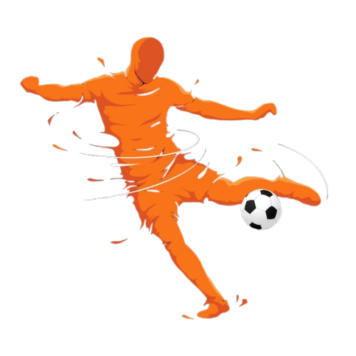

Técnicas para Futebol
ㅤChutes =>Temos 3 chutes cruciais para o futebol: a chapada, a bomba e a cavadinha.
Chapada: é um chute feito com a parte lateral do pé. Para executá-la, não coloque muita força,
e, sim, um toque de magia.
Bomba: é um chute feito com o peito do pé. Para executá-la, coloque todo sua força nessa neste
chute, o importante é a força, não a magia.
Cavadinha: é um tipo de chute diferente. Embora seja feito com o peito do pé, é mais comum
que as pessoas o executem com a ponta dos dedos, você precisará erguer a bola dando um
tapinha com o pé para cima dedos para que ela suba e caia onde você mirou.

ㅤPasse =>existem alguns estilos essenciais para jogar: o básico, o de cobertura e a fatiada.
Básico: é o passe mais básico mesmo, conhecido como "passe curto" você devera tocar a bola
em direção ao seu parceiro de equipe, tocando na bola com a parte lateral do pé, como se fosse
dar uma chapada, mas sem colocar muita força, se não vai errar.
Cobertura: passe de cobertura, conhecido como passe aério, é realizado muitas vezes com o
peito de pé, você deve visualizar onde está seu companheiro e jogra a bola certinha para ele
dominar e sair para o jogo.
Fatiada: a fatiada é o passe ou também lançamento que eu mais gosto de fazer, não só pela
facilidade que é utilizar, mas, tamb´m pela versatilidade que se pode usar ela, é feita usando
o peito de pé, batendo com seu corpo praticamente inclinado do lado oposto da bola, fazendo
isso, ela deve pegar um belo efeito e chagar perfeita para o se companheira jogar.